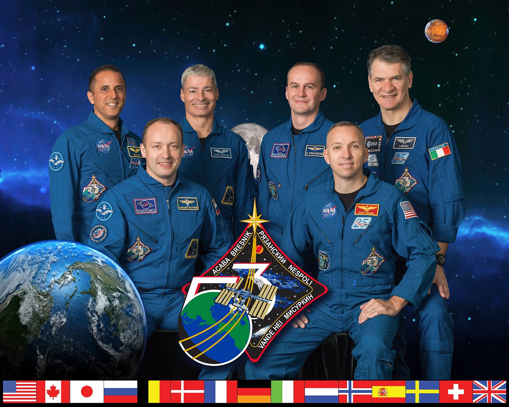
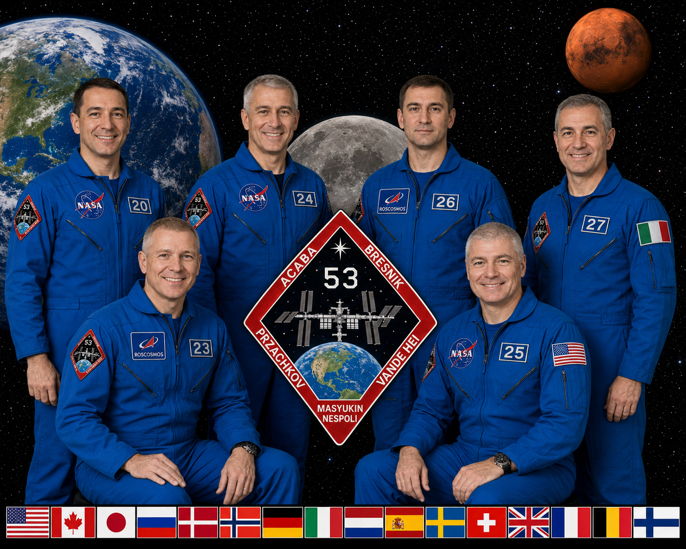

CASE astronaut-crew-expanded
FAIL
Expedition 53 crew portrait


Visual proxy0.732
Layout0.770
dHash0.594
Palette distance0.054
195.4:1 artifact ratio · 640,005 → 3,276 bytes
Prompt and machine-readable result
Create a new image from this semantic description. Primary request: Six astronauts in blue flight suits with various mission patches, standing and seated in front of a space scene featuring Earth, Moon, Mars, and a mission patch with the text 'ACABA BRESNIK PRZACHKOV NESPOLI VANDE HEI MASYUKIN' and a space station graphic, with a row of international flags at the bottom. Fidelity goal: Maximize resemblance to this specifically described subject. Prioritize distinctive markings, proportions, pose landmarks, crop, and object geometry over generic beauty or creative interpretation. Style/medium: Photorealistic digital composite with sharp focus, even lighting, and detailed textures on flight suits and celestial bodies. Canvas: 1920x1536 (1.250:1) Composition: - 0 0 999 999: Full image: six astronauts in blue flight suits, Earth on left, Moon behind center, Mars top right, mission patch center, international flags bottom row, starry space background. - 0 585 289 935: Earth: blue and green planet with visible continents and clouds, positioned left side, partially cropped. - 450 295 525 425: Moon: gray, cratered surface, partially visible behind center astronauts. - 835 45 880 105: Mars: orange-red planet, top right corner. - 350 500 640 900: Mission patch: diamond-shaped with red border, '53' in white, space station graphic, text 'ACABA BRESNIK PRZACHKOV NESPOLI VANDE HEI MASYUKIN' around edges, Earth graphic, and star. - 3 935 995 989: Row of international flags: 16 flags including US, Canada, Japan, Russia, Denmark, Norway, Germany, Italy, Netherlands, Spain, Sweden, Switzerland, UK, and others, bottom edge. - 93 155 279 600: Astronaut 1: standing left, blue suit with NASA and other patches, short dark hair, smiling, facing forward. - 170 285 455 935: Astronaut 2: seated left, blue suit with 'ROSCOSMOS' patch, short light hair, smiling, facing forward. - 345 155 500 600: Astronaut 3: standing center-left, blue suit with patches, short gray hair, smiling, facing forward. - 475 295 860 935: Astronaut 4: seated right, blue suit with NASA and '25' patch, short light hair, smiling, facing forward. - 500 150 655 675: Astronaut 5: standing center-right, blue suit with 'ROSCOSMOS' patch, short dark hair, neutral expression, facing forward. - 700 105 915 935: Astronaut 6: standing right, blue suit with Italian flag patch, short gray hair, smiling, facing forward. Palette: #0066CC, #000000, #0099FF, #FF6600, #FF0000, #00FF00, #FFFFFF, #808080 Text to render verbatim when possible: - "ACABA BRESNIK PRZACHKOV NESPOLI VANDE HEI MASYUKIN" - "ROSCOSMOS" - "NASA" - "25" - "20" - "23" - "24" - "26" - "27" - "28" - "29" - "30" - "31" - "32" - "33" - "34" Constraints: preserve every described landmark, hierarchy, and spatial relationship; add no unlisted subject, object, marking, or decoration. This is a semantic reconstruction, not the original. Avoid: inventing names for astronauts, describing non-visible text, inferring mission details beyond visible text, using generic terms like 'space' without specific objects; extra logos; watermarks; invented claims.
Your assessment
Source: Robert Markowitz · Public domain (NASA) · reconstruction generated from text only
{kind=link}
{kind=link}
.jpg){kind=link}
.jpg){kind=link}
.jpg){kind=link}